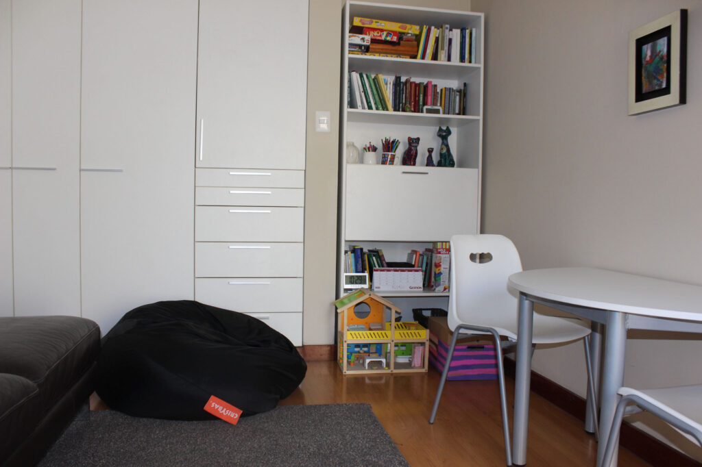
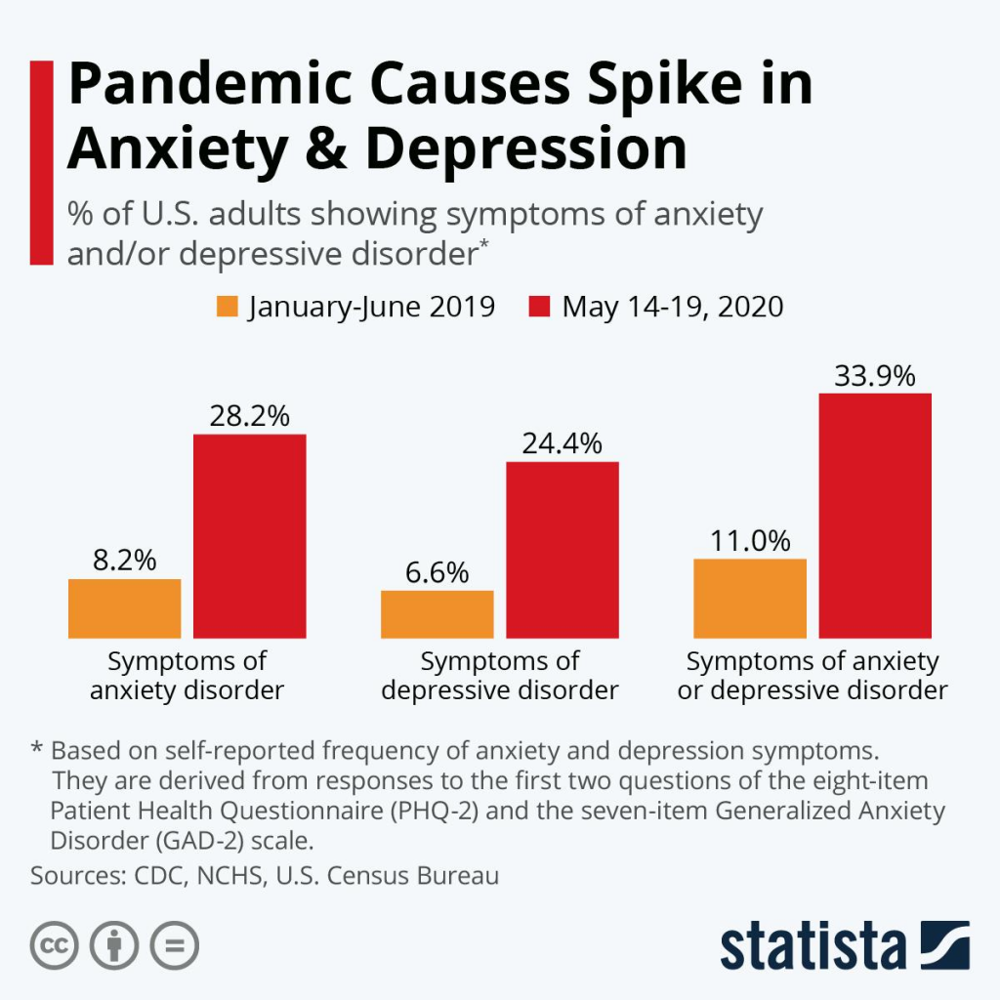

La pandemia provoca un aumento de la ansiedad y la depresión

Los temores propios de la pandemia y de los problemas colaterales están generando síntomas de ansiedad y depresión con mayor frecuencia que en circunstancias normales. Uno de cada tres personas es consciente de estos síntomas. Sin embargo sólo el 50% de quienes padecen de estos síntomas los reconocen, por lo que podríamos suponer que 2 de cada 3 personas están sufriendo de Ansiedad y Depresión en este momento.
